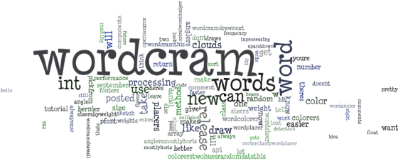

|
WordCram 0.5 | ||||||||
| PREV NEXT | FRAMES NO FRAMES | ||||||||
See:
Description
| Packages | |
|---|---|
| wordcram | |
| wordcram.text | |
WordCram is a Processing library for generating word clouds. Like this one, made from the text on http://wordcram.org:

It loads text files and web addresses, parses HTML. It does basic text analysis, counting up the words. You choose each word's font, color, size, and rotation.
svn checkout the source at
the project page; see what's new at
the blog, or
twitter@wordcram.
|
WordCram 0.5 | ||||||||
| PREV NEXT | FRAMES NO FRAMES | ||||||||